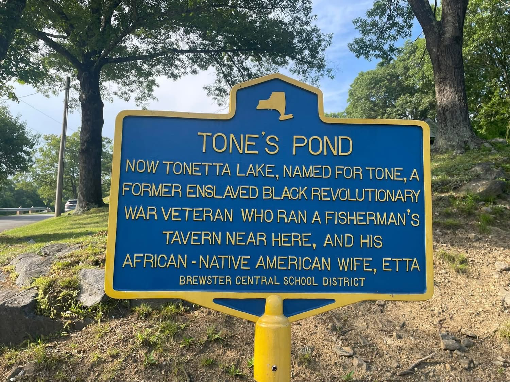

Tone’s Pond
The story of Anthony Waring — enslaved Black man, soldier in General Washington’s Corps of Sappers and Miners at the Siege of Yorktown, freed veteran, fisherman’s tavern keeper — and of his wife Etta, whose joined names became the place-name of one of Southeast’s landmark lakes.

TONE’S POND
Now Tonetta Lake, named for Tone, a former enslaved Black Revolutionary War veteran who ran a fisherman’s tavern near here, and his African-Native American wife, Etta
About this Marker
For two centuries, residents of the Town of Southeast had a story about how their largest lake got its name. The lake had been called Waring’s Pond in the eighteenth century and Tone’s Pond in the nineteenth, and was known by the early twentieth century as Tonetta Lake. The local tradition held that “Tonetta” was a contraction of two names — Tone and Etta — the husband and wife who had lived at the edge of the water running a fisherman’s tavern after the Revolution. Tone, the story went, had been an enslaved Black man freed for his service in the Revolutionary War; Etta, his wife, was sometimes described as “half Indian, half Negro” in the language of nineteenth-century sources. The earliest published record of the story is in William J. Blake’s History of Putnam County, N. Y. in 1849 — written within living memory of Anthony and Mahettable Waring, who had died in 1821 and (probably) the mid-1830s — and the broad outlines appear again, in much briefer form, in W. S. Pelletreau’s standard 1886 county history. But the story ran into a documentary wall: no manumission record had ever surfaced, and no person named “Tone Waring” appeared in any post-Revolutionary census of the Town of Southeast.
In 2023 and 2024, a Brewster High School student named Roderick Cassidy Jr., working as a volunteer transcriber on the National Archives’ Citizen Archivist Mission, opened the question. He proceeded on a hunch: that “Tone” was a nickname, perhaps for Tony, or for the full name Anthony. (The hunch was a sound one: the 1876 Centennial address by H. H. Roberts, published in the Putnam County Standard, had recorded the name as “Tony” outright — though no later county history preserved that detail.) Cassidy searched the federal Revolutionary War pension files for an Anthony Waring from the Town of Southeast. The file came up — twenty-two pages, applications, supporting affidavits, an inventory of household goods, sworn testimony of neighbors, signatures (or “marks”) of an illiterate veteran and his ninety-seven-year-old widow. The local tradition turned out to be substantially true, and the man at its center turned out to have a more remarkable Revolutionary record than the local fragments had ever suggested.
Anthony Waring
Anthony Waring appears in the documentary record as an enslaved man in the household of John Waring of the Town of Southeast, in the years leading up to the American Revolution. The Waring family had moved from Smithtown, on Long Island, to the upland farms of southern Dutchess County (today Putnam County) by the 1770s — Anthony and Mahettable, his wife, had come with them, having married in Smithtown in or about 1773. By 1777 they were living together as husband and wife in the Town of Southeast, in a tenant household near the lake that would later carry their joined name.
On June 1, 1781, Anthony Waring enlisted in the Continental Army. The local tradition that John Waring had promised him his freedom in exchange for that enlistment is consistent with the broader pattern of late-war Black recruitment in New York and Connecticut — the New York Legislature’s 1781 act offered formal manumission to enslaved men who enlisted, and many Northern slaveholders made the same trade privately. Whatever the precise arrangement, Anthony enlisted under the Connecticut quota, traveled to Danbury, was assigned briefly to Captain Comstock’s Company, and was then transferred to Captain David Bushnell’s Company — the same Bushnell who is remembered as the inventor of the Revolution’s submarine, the Turtle.
Bushnell’s company belonged to General Washington’s Corps of Sappers and Miners, a small, technically demanding, and deliberately racially integrated engineering unit. Sappers and miners did the dangerous work of trench-digging, fortification, and assaulting fortified positions under enemy fire — cutting away the wooden picket defenses (the abatis) that protected enemy redoubts, so the storming infantry could pass. By the autumn of 1781 Anthony was in Virginia, and on the night of October 14, 1781, the Sappers and Miners went in at the Siege of Yorktown.
The action is one of the decisive moments of the American Revolution. Two British redoubts — numbered 9 and 10 — anchored the British defensive line. Their capture would put the American artillery in range to break the British position. Light infantry under Alexander Hamilton and French troops under Comte de Deux-Ponts made the assault; the Sappers and Miners went in first to cut away the picket defenses with axes. In his own 1818 pension testimony, Anthony Waring described his role at Yorktown as having “been engaged in cutting away the pickets at the storming of one of the redoubts near Little York.” (“Little York” was the eighteenth-century name for Yorktown.) Five days later, on October 19, 1781, Lord Cornwallis surrendered the British army. The war was effectively over.
Anthony Waring served until the end of the war, was honorably discharged at West Point, and received his certificate signed by Major General Henry Knox — the same Knox who would become Washington’s first Secretary of War. He returned to the Town of Southeast a free man.
Tone and Etta
The marriage of Anthony and Mahettable Waring predated the Revolution by some years — her 1836 widow’s pension testimony, given when she was ninety-seven years old, places their wedding at Smithtown, Long Island, around 1773. They had six children together. After Anthony’s return from the war, they settled near the edge of the lake that local maps still showed as Waring’s Pond — the body of water owned (under the Philipse Patent leasehold system) by Anthony’s former enslaver John Waring — and ran a small fisherman’s tavern there. The lake’s name slowly shifted in local speech: Waring’s Pond became Tone’s Pond, and the joined names of the couple eventually became Tonetta.
Mahettable was called by several names in the surviving documents — Mahettable on legal papers, Hetty in family use, and remembered in local tradition as Etta. Her heritage was African and Native American, in the description of nineteenth-century sources that gave us most of what we know about her; the marker at the lake preserves that description in modernized form. She outlived Anthony by at least fifteen years, and her own testimony, given in her ninety-seventh year for the widow’s pension she was finally entitled to, is one of the principal documentary sources for both their lives.
Of Anthony and Mahettable’s six children, two were still living at the time of Anthony’s death in 1821. One was a daughter, Jane, who married Charles Hutchinson and was the mother of Orrin Hutchinson. In 1836 — the same year Mahettable was finally awarded her husband’s pension in arrears — Charles Hutchinson and his son Orrin purchased a farm at the base of Turk Hill Road, just outside the Village of Brewster. They were among the earliest free Black families known to have owned property in the Town of Southeast.
The pension files
Anthony Waring’s pension application is dated April 6, 1818, filed under the Revolutionary War Pension Act passed by Congress on March 18 of that year. He signed it with an “X” — identified in the file as “his mark” — the standard notation for a man who could not write. In his sworn declaration, he was recorded as “Anthony Waring, aged eighty-four years, a man of color & resident in the town of Southeast.” The phrase “a man of color” appears only once in the entire file; it is the document by which his identity as a Black Revolutionary veteran is preserved.
The application granted him a soldier’s pension of $8 per month. The required inventory of his personal estate is preserved with the file, and it is worth seeing in full, because it is the entire material life of a free Black household in 1818: one old table, four chairs, one chest, one cupboard, one stand, one looking glass, five plates, one platter, one tea pot, three tea cups and saucers, three bowls, three spoons, a few pots and pans, a fire shovel and tongs, four baskets, one dog, one cat, and two hens. Anthony described himself as suffering from old age, lameness in his leg from the war, and partial deafness, “utterly unable to earn my subsistence by labor.” His most recent trade had been making brooms and baskets.
He died on July 15, 1821. Mahettable was left destitute, and lived with her daughter Jane Hutchinson’s family. It would take fifteen years for the Revolutionary widows’ pension acts to extend coverage to her. In 1836, when she filed her own application at the age of ninety-seven (with the assistance of Putnam County judge Ebenezer Foster), supporting testimony came from her daughter Jane, from her elderly neighbor Mary Waring (then eighty-four, the second wife of John Waring), and from Isaac Paddock, a longtime Southeast resident who had known Anthony and Mahettable as husband and wife in the town as early as 1777. The 1836 pension award included roughly $400 in arrears — arrears that, the year she received them, helped enable her grandson’s purchase of the Turk Hill farm.
How the story was preserved — and how it was lost
The earliest published account of Tone’s Pond is in William J. Blake’s The History of Putnam County, N. Y. (1849), the foundational nineteenth-century history of the county. Blake was writing twenty-eight years after Anthony’s death and within living memory of Mahettable’s. He set down what local people still knew:
This handsome body of water lies in the westerly part of the town, is one mile long, half a mile wide; and is named in honor of an old negro of the name of Tone, who settled beside it. He was the slave of John Warring, deceased, enlisted and served in the Revolutionary war, on condition that he should have his freedom at its close. Having received his freedom after peace was declared, he married a woman half Indian and half negro; settled down beside this pond which soon became a great resort for fishing sportsmen. He kept boats for their accommodation, and furnished them with whatever was called for in the form of victuals and drink; a sort of fisherman’s tavern, where everything appertaining to the sport is to be had at the shortest notice, for which liberal payment is made, and no credit expected by either party. He left quite a numerous and respectable number of descendants.
— William J. Blake, The History of Putnam County, N. Y. (1849), pp. 296–297
Blake preserved the substance of what the modern marker says, with one painful addendum that the marker omits and that we include here as part of what Blake actually recorded. Immediately after the “numerous and respectable” descendants line, Blake adds: “It is said that one of his grandsons married a beautiful young white girl who shortly afterwards induced him to go south with her, where she sold him as a slave.” The story is presented as local rumor (“It is said that”), and no corroborating record has surfaced; the kidnapping and southward trafficking of free Black northerners was a documented practice in the antebellum decades, but specific stories of the kind Blake records also circulated as moralizing folk-tales attached to Black families in nineteenth-century county histories. The grandson is not named. What can be said is that several of Anthony and Mahettable’s known descendants — including their daughter Jane’s family, the Hutchinsons of Turk Hill — lived openly and respectably in the Town of Southeast for generations after Blake wrote.
What happened to the Tone story after Blake is itself part of what this marker commemorates. The standard later sources thinned the record progressively:
- · 1853 — Putnam County Courier, May 7. A short notice headed “Tone’s Pond” reports that “a desire is manifested…to change the name of Tone’s Pond in the town of Southeast, previous to the issue of Mr. O’Connor’s new map of our county,” and proposes a meeting at Sodom Corners on the following Thursday evening at 7 o’clock “by which the matter can be discussed, a new name adopted, and changes made in the names of other Lakes or ponds in that town.” The earliest known documentary evidence of a community-level effort to change the lake’s name — and an effort that, as the next entry shows, succeeded within the year.
The 1853 notice’s explicit reference to O’Connor’s forthcoming map gives the renaming proposal its specific urgency. Putnam County had been formed from Dutchess in 1812; the lake area appears (unlabeled) on the Burr 1829/1839 Dutchess-Putnam map, and no dedicated map of the new county had been published in the quarter-century between Burr and O’Connor. The Putnam History Museum’s own research guide names the Burr and O’Connor maps as the first two in the county’s cartographic record. The community of Southeast in May 1853 understood this clearly: O’Connor’s new map would be the first published cartographic representation of the lake in twenty-five years, and the name it carried there would be the name future map-readers knew. The Sodom Corners meeting was a deliberate effort to control that label before it was set in print.

- · 1876 — H. H. Roberts, “Historical Sketch” (Putnam County Standard, Centennial address, July 14). Records the lake’s name with a key detail no later source preserved: “Tone’s Pond takes its name from an old negro by the name of Tony, who settled beside it.” The freedom-for-service deal, the military service, and the fisherman’s tavern — all of which Blake had recorded 27 years earlier — are dropped. The most striking absence is contextual: a Centennial address delivered on the 100th anniversary of the Declaration of Independence makes no mention of a Continental Army veteran of Yorktown who had lived in the speaker’s own town.
- · 1886 — W. S. Pelletreau, History of Putnam County. Reduces Blake’s account to a single dependent clause: the lake is “more generally known as ‘Tone’s Pond,’ from a negro who lived near it.” The Revolutionary service, the freedom-for-service deal, the fisherman’s tavern, the wife, and the descendants are all dropped.
- · 1895 — Putnam County Courier, March 15. A short notice on the lake records the John Waring story almost verbatim from Blake forty-six years earlier: “It was always known till recently as Tone’s pond from an old negro called Tone, who settled by it. He was the slave of John Warring and enlisted in the war of the revolution on condition that he should have his freedom at its close.” The phrase “always known till recently as Tone’s pond” documents that the renaming from Tone’s Pond to Lake Tonetta was a recent and remembered event as of 1895. The same article repeats Blake’s grandson-trafficking passage almost verbatim, with one added specific (the white girl is described as “a southerner”).
- · 1912 — Oxford Publishing Co. (Haight et al.), Historical and Genealogical Record, Dutchess and Putnam Counties. Copies Pelletreau’s Lake Tonetta paragraph nearly verbatim, but deletes Pelletreau’s “negro who lived near it” sentence. The deletion is not editorial accident; it is the only sentence removed from an otherwise word-for-word transcription.
- · 1944 — Laura Voris Bailey, “Historical Sketch of Brewster” (Brewster Standard). An eight-page local history article in the village newspaper. No mention of Tone, the lake’s etymology, or any Black resident of Southeast.
- · 1946 — L. H. Zimm (ed.), Southeastern New York. Treats Lake Tonetta as infrastructure: a 1880–81 drought-period New York City water-supply source and a 1925 real-estate development. The etymology is not mentioned.
The story’s late-nineteenth-century newspaper appearance — the 1895 Courier notice republishing Blake’s account almost verbatim — turns out to have been its last echo in print. After 1895 the John Waring identification dropped out of the published record. Pelletreau’s 1886 reference to “a negro who lived near it” was the last surviving fragment in a county history; the twentieth-century compilations did not even preserve that. And nobody — not Blake, not Roberts, not Pelletreau, not the Courier, and none of their twentieth-century successors — had ever consulted the twenty-two-page federal pension file in Washington. The story survived in local conversation as a conviction that “Tone” had been a real freed slave who had lived at the lake, but the man himself — his given name, his Continental service, his battlefield record, his household, his descendants — was for practical purposes lost to anyone who hadn’t physically opened the federal record.
The work that closed that gap had two parts. In 2020, the Putnam County Historian’s Office, in response to the renewed national attention to Black history that summer, identified Tone’s Pond as one of a small number of Putnam sites with significant but under-documented Black historical importance, and began working with the Brewster Central School District toward installing the first Putnam County historical markers dedicated to Black history. A PILOT intern, Andrew DiFabbio, summarized the state of the question in a 2020 Patch op-ed: the local story was unverified at the level of primary sources, the namesake’s surname was given variously as “Seeley” and “Waring,” and even the wife’s name was unclear. Three years later, the second part of the work closed those questions. A Brewster High School student, Roderick Cassidy Jr., working as a volunteer transcriber on the National Archives’ Citizen Archivist Mission, made the methodological move that every prior local-history compiler had failed to make: he went to the federal record directly. Hypothesizing that “Tone” might be a nickname for Tony or Anthony, he searched the federal Revolutionary War pension files for an Anthony Waring from the Town of Southeast. The hit was immediate, and the file contained the entire documentary chain — the 1818 application, the 1821 death, the 1836 widow’s pension, the affidavits of neighbors, Mahettable’s own ninety-seven-year-old testimony — that confirmed and substantially expanded what Blake had recorded 175 years earlier. Cassidy published his findings in the Brewster Bear Facts, the student newspaper of Brewster High School, in February 2024.
The Brewster Central School District placed the marker at the lake shortly thereafter, completing the project the county historian’s office had begun in 2020. It is, as far as we know, the only historic marker in Putnam County to have been initiated by original student research.
The lake after Tone
Anthony and Mahettable Waring’s tavern by the lake did not survive them, and by the late nineteenth century the lake had passed into the ownership of George Hine (1834–1914), a Brewster Hill farmer who served as Town of Southeast supervisor, town assessor, commissioner of highways, and director of the Putnam County Savings Bank. Hine and his son operated an ice house on the west shore of the lake; Hine was also the founding president of the Tonetta Outing Club, a social club with its own building on the western shoreline. The lake passed eventually to the Mengel estate, and in 1963 the Town of Southeast purchased it for use as the public beach and park that residents know today. The northern wetlands — a rare inland Atlantic White Cedar Swamp, one of the northernmost of its kind in New York State — were added to town protection in 1991 as the Cedar Swamp Conservation Area.
A late-nineteenth-century Brewster Standard obituary for Orrin Hutchinson — the man Cassidy’s 2024 research identifies as Anthony and Mahettable Waring’s grandson — gives a different account of the lake’s namesake:
His mother was a daughter of Tone Seeley whose residence a century ago occupied a commanding eminence on the west shore of the lake that bears his name Tone’s pond. … (As far as we can learn this beautiful lake was first known as Waring’s Pond then Tone’s Pond and now Tonetta Lake.)
— Orrin Hutchinson obituary, Brewster Standard (reported c. 1886)
The obituary calls Orrin’s grandfather “Tone Seeley,” not Anthony Waring, and gives no mention of enslavement, Revolutionary War service, or the John Waring household. The parenthetical at the end — written in the editor’s voice, hedged with “as far as we can learn” — appears to register some uncertainty about reconciling the family’s “Tone Seeley” account with the better-known “Waring’s Pond” tradition.
A systematic search of the five standard county histories (Blake 1849, Pelletreau 1886, Beers 1897, Haight 1912, Zimm 1946), six available local newspaper articles (Roberts 1876, the 1853 and 1895 Putnam County Courier notices on Tone’s Pond, the anonymous 1904 Brewster Standard piece, Bailey 1944, and Addis 1948), and the 2020 Patch op-ed by the Putnam County Historian’s Office PILOT intern Andrew DiFabbio produces a clear pattern. Pelletreau’s 1886 history contains thirty-six references to the Seeley family — including Abijah Seeley, Dr. Jonathan F. Seeley, William Seeley, James Seeley, Isaac Seeley, Nathan W. Seeley, and Francis A. Seeley — but not one is named Tone, Tony, or Anthony, and all are placed in the Town of Patterson around Doansburg, not in the Town of Southeast around Lake Tonetta. The 1876 Roberts Centennial address, which preserved the nickname “Tony” in print, says nothing of any Seeley. The 1895 Courier notice — published in the same town and nearly contemporaneous with the Hutchinson obituary — reports the John Waring identification almost verbatim from Blake. Across all twelve sources reviewed, the phrase “Tone Seeley” appears in only one place outside the Orrin Hutchinson obituary itself: the 2020 Patch op-ed, which explicitly notes the surname is unverified.
On the evidence as it stands, two readings remain plausible. The first is that the obituary records a maternal-line surname accurately: Orrin’s mother is named “Jennie Seeley” in a 2020 Patch op-ed by Putnam County Historian’s Office PILOT intern Andrew DiFabbio, and if that maternal surname is correct then “Tone Seeley” may simply be how the obituary writer named the grandfather through the mother’s family line. Under this reading, “Seeley” is the mother’s maiden name, attached to the only grandfather the family colloquially knew as “Tone,” and the published John Waring tradition (Blake 1849, the 1895 Courier) and the Tone Seeley family memory are pointing at the same man under two different surname conventions. The second possibility is the simpler one: that the obituary writer or the family had genuinely confused two generations, and that the Patch op-ed’s 2020 reconstruction inherited that confusion. The two readings could be distinguished by Charles and Jennie Hutchinson’s marriage record, which would tell us whether Jennie’s maiden name actually was Seeley or whether it was Waring. A third possibility — that two unrelated local figures named “Tone” have been conflated — finds little support: a substantial west-shore landowner of the post-Revolutionary period would normally appear in Pelletreau’s property records, and no such figure does.
Lines of inquiry worth pursuing: Pelletreau’s Seeley genealogy on pp. 265–267 (does any line of Abijah or Jonathan F. Seeley intermarry with the Hutchinson family of Southeast?); census records for the Hutchinson household at Turk Hill in the 1810s through the 1830s; Charles and Jennie Hutchinson’s marriage record and the maternal surname recorded there; and the deed record for the 1836 Hutchinson farm purchase. It is worth being precise about what the obituary and the 2020 op-ed actually put in question. The existence of Anthony Waring as a Continental Army veteran enslaved by John Waring is established by the federal pension file in Washington. The attribution of the lake’s name to that enslaved man is independently established by four published sources before any modern reconstruction: Blake (1849), Roberts (1876), Pelletreau (1886), and the Putnam County Courier (1895), all of which connect the lake’s name to a freed slave of the John Waring household. None of those findings is affected by the “Seeley” question. What remains open is the further genealogical claim about Orrin Hutchinson’s descent from Anthony, and specifically the maiden surname of Orrin’s mother Jennie. That question is answerable from primary records that have not yet been examined.
Town of Southeast, NY
Sources
- On-site photograph of the Brewster Central School District marker at Tonetta Lake.
- Anthony Waring Pension File, Revolutionary War Pension and Bounty-Land Warrant Application Files, National Archives and Records Administration, Record Group 15 — the primary documentary source for Anthony Waring’s service, household, death, and Mahettable’s 1836 widow’s pension. Twenty-two pages, transcribed through the National Archives Citizen Archivist Mission.
- Roderick Cassidy Jr., “The Hidden History of Tone’s Pond Discovered: The Namesake of a Revolutionary War Hero,” Brewster Bear Facts, February 6, 2024 — primary published account of the pension-file identification of “Tone” as Anthony Waring, including direct quotations from and reproductions of the National Archives pension documents. The principal source for this page’s biographical narrative.
- William J. Blake, The History of Putnam County, N. Y. (New York: Baker & Scribner, 1849), pp. 296–297 — the earliest published source for the Tone’s Pond story. Blake’s paragraph, written within living memory of Anthony Waring, records the freedom-for-service deal (“He was the slave of John Warring, deceased, enlisted and served in the Revolutionary war, on condition that he should have his freedom at its close”), the fisherman’s tavern, Etta as “a woman half Indian and half negro,” the “numerous and respectable” descendants, and the grandson-trafficking rumor (presented as “It is said that”). Blake names only “Tone,” not Anthony. The substance of the modern marker text traces directly to this 1849 passage.
- “Tone’s Pond” (notice), Putnam County Courier, May 7, 1853 — the earliest known dated newspaper reference to the lake by name, and the earliest documentary evidence of a community-level effort to change it. The notice reports that “a desire is manifested…to change the name of Tone’s Pond in the town of Southeast, previous to the issue of Mr. O’Connor’s new map of our county,” and proposes a meeting at Sodom Corners to that end. The next item below confirms the renaming was accomplished within the year.
- John O’Connor, Map of Putnam County, New York, 1854 — the earliest cartographic appearance of the name “Tonetta Lake.” The O’Connor map is the closing piece of evidence on the 1853–1854 renaming sequence: the renaming proposed in the May 1853 Putnam County Courier notice was successfully completed before the map went to press the following year. The map also records surrounding landowners (T. Reed, A.B. Marvin, C.W. Hine, I. Townsend, I.V. Paddock) and the just-built Harlem Railroad right-of-way.
- William S. Pelletreau, History of Putnam County, New York (Philadelphia: W. W. Preston & Co., 1886), pp. 431–432. The verified passage reads: “North of Southeast Center, and adjoining the north part of Lot 9, was in former times the farm of John Waring …… John Waring came to this place from Norwich, Conn., before the Revolution and was tenant of a large farm, which ran west to what was then called Waring’s Pond, and now known as Lake Tonetta. It was more generally known as ‘Tone’s Pond,’ from a negro who lived near it.” Pelletreau also gives John Waring’s death date (Feb. 17, 1809, aged 73) and the names of his nine children — none of them Anthony — corroborating Cassidy’s observation that “Anthony” was not a name in John Waring’s family.
- H. H. Roberts, “Historical Sketch,” Putnam County Standard, July 14, 1876 — the Centennial address delivered at Brewsters on the 100th anniversary of American independence. Roberts records: “Tone’s Pond takes its name from an old negro by the name of Tony, who settled beside it.” This is the earliest known publication to preserve the actual nickname “Tony” — a detail no later county history preserved — and the bridge between Blake’s anonymous “Tone” and the “Anthony” of the federal pension file. Roberts gives no further biographical information; the Continental service is not mentioned.
- Notice on Lake Tonetta, Putnam County Courier, March 15, 1895 — records the John Waring identification almost verbatim from Blake (1849), forty-six years later: “It was always known till recently as Tone’s pond from an old negro called Tone, who settled by it. He was the slave of John Warring and enlisted in the war of the revolution on condition that he should have his freedom at its close.” The notice documents that the renaming from Tone’s Pond to Lake Tonetta was a recent and remembered event as of 1895, and is the latest known nineteenth-century newspaper appearance of the Tone-as-Waring’s-slave story.
- Oxford Publishing Co. (Haight et al.), Historical and Genealogical Record, Dutchess and Putnam Counties, New York (Poughkeepsie, c. 1912) — copies Pelletreau’s Lake Tonetta paragraph nearly verbatim but deletes Pelletreau’s “negro who lived near it” sentence. The deletion is documented in the direct comparison of the two texts. Also lists John Waring among the financial benefactors of the 1794 Doansburg Presbyterian church construction (£745).
- Laura Voris Bailey, “Historical Sketch of Brewster” (Brewster Standard, March 23, 1944) — cited here for the documented absence of any Tone or Anthony Waring mention in the major mid-twentieth-century Brewster local-history newspaper article (eight pages, signed, on the front).
- Louise Hasbrouck Zimm (ed.), Southeastern New York: A History of the Counties of Ulster, Dutchess, Orange, Rockland and Putnam (1946) — for the 1880–1881 New York City drought-period water-purchase contract on Lake Tonetta, and for the 1925 Tonetta Lake Corporation purchase of the George Hine farm and subdivision of 110 acres into approximately 80 summer homes. Zimm does not mention the lake’s etymology.
- Esther Lobdell Addis, “Social Reminiscences” (Brewster Standard, June 17, 1948) — for the Tonetta Outing Clubhouse social history (George Hine birthday clambakes, fish-fry suppers).
- Andrew DiFabbio, “Op-Ed: Perspective On Black History In Putnam County,” Patch, August 27, 2020 — the published account of the Putnam County Historian’s Office 2020 PILOT internship work on Tone’s Pond and Snowdale Farm. Contains the key Patch genealogical claim that Orrin Hutchinson’s mother was “Jennie Seeley, Tone’s daughter,” and reports the early stage of the county historian’s office initiative to install Putnam County’s first historical markers dedicated to Black history, in partnership with the Brewster Central School District.
- “Lake Tonetta: Black History,” New York Almanack, February 2024 — regional coverage of the Cassidy research and the marker installation.
- “Tonetta Lake, Then and Now,” Adventures Around Putnam (Steven Mattson, ed.) — for the post-Revolutionary lake history, including the George Hine ownership, the Tonetta Outing Club, the 1963 Mengel-to-town sale, the 1991 Cedar Swamp Conservation Area addition, and the lake’s measured dimensions.
- The 1781 enlistment date, the assignment to Captain David Bushnell’s Company in the Corps of Sappers and Miners, the October 14, 1781 assault on the Yorktown redoubts (Redoubts 9 and 10), and the broader military context of the Siege of Yorktown are drawn from Cassidy 2024 and corroborated by the standard Wikipedia entries on the Siege of Yorktown and the Corps of Sappers and Miners.